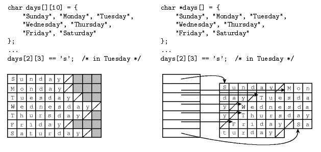
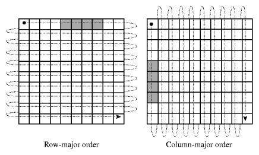
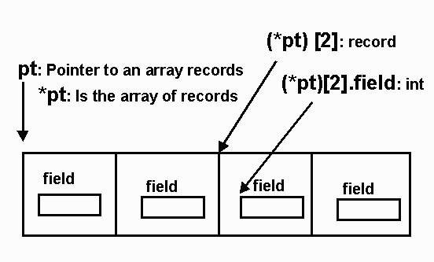
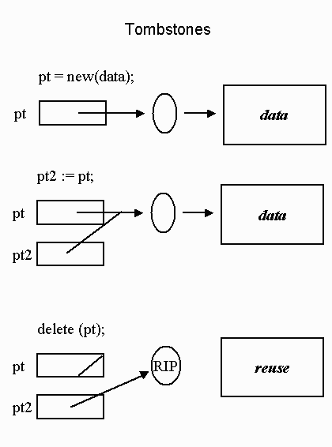
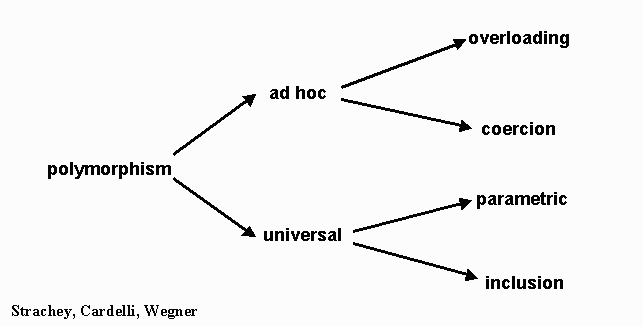

Type Systems
Spring 2007
The purpose is examine the effects of different language
design
decision on how the Types work. Topics covered are aggregate
types and type equivalence.
The Definition of Types: 3 POV
- denotational
pov:
- constructive
pov:
- a type is either primitive
(or
predefined)
- or a composite
type built by applying a type
constructor to one or more simpler types
- array, 'struct', set, etc
- interface pov:
- set of operations with a well defined and mutually
consistent semantics
- programmer's pov: a mixture of these pov.
Classification of Types
- Simple types:
Predefined types used to construct all other types
- keywords (int, etc)
Not predefined types: Enumerated and Subrange Types
- Enumerated types consist of a set of named elements.
- Various languages (Pascal, Ada, Modula-2, C++) allow
users to
define enumerated types:
TYPE
Traffic_signal IS (Red,
Green);
TYPE Rainbow
IS (Red, Orange,
Yellow, Green, Blue, Violet);
- This is
Ada, Pascal will not
allow Red and Green to appear in two enumerated types.
SUBTYPE
Brighter IS Rainbow
RANGE Red..Yellow;- It is
obvious to the compiler
that
Red is of type Rainbow.
- Enumerated types have Predecessor and Successor
functions
provided in the language and, in some cases, other functions:
Rainbow’SUCC(Green) is Blue
Rainbow’PRED(Yellow) is Orange
Rainbow’LAST is Violet
Rainbow’FIRST is Red
- Maximum value for integers
ADA: Integer’LAST
Pascal: MAXINT
Java: java.lang.Integer.MAX_VALUE
C : <Limits.h>
- C: enums
are basically a way to alias names to integers
- C++: enums
define an actual type
- Java 5 has "linguistic support" for enum
types.
Subsets/subranges
- legal: Z := X; X := Z; (if
Z in the
range of X)
- not legal: Z := Y;
- The range portion is called a type constraint
- Myrange is a constrained subtype
- Mytype is called a derived type.
Composite, or
constructed type
- Grouping of elementary data elements
- Aggregate of heterogeneous types
- Records
- Aggregate of homogeneous types
- Arrays
- Aggregate of aggregates
- linked lists
- Constructors are provided by the language to facilitate
the
use
of data aggregates.
- Older languages:
- Early versions of Fortran had only arrays
- Cobol had only records
- Common type constructors:
- records or structs for Cartesian Products
- arrays with one or more dimensions
- union types for unions
- Also implemented using variant records known as
discriminated records in Ada
- C provides structs :
struct Rec {
int x;
int y;
char a;
float f;
}
Declaration and Initialization
struct Rec var = { 1; 1; 'a'; 1.2 };
- Java: does not have structs
- Classes without methods can be viewed as records.
- C++:
structs may have methods
- C#: structs
may have methods
- structs
are value types vs classes which are
reference types
- Ada records:
TYPE Emp_name_typ IS RECORD
First : String(1..20);
Middle : String(1..10);
Last : String(1..20);
END RECORD;
TYPE
Emp_rec_typ IS RECORD
Emp_name : Emp_name_typ;
Hourly_rate : Float;
END RECORD;
Employee_record :
Emp_rec_typ;
- Haskell example:
data People = Person String Int
- People
is
the type name
- Person is the constructor
- Implementation issue: How are records stored in memory
and what are offsets?
Type Checking
- Compiled languages usually do as much type checking as
possible before running the program. (Static type checking).
- Some languages must include tables in the run-time
environment for dynamic type checking.
Issue for statically typed languages
- type equivalence
- type compatibility
- type inference
When are two types the
same? -- Type
Equivalence
- To have compatibility we use subtypes,
e.g.
subtype S is T1 range 2..5
Beware of anonymous types in Ada:
- Variable declarations of arrays and tasks (without
giving a
name to the corresponding type) may create anonymous type that are
different each time: (Ada)
x, y: array(1..9) of integer;
is equivalent to:
type internal_type1 is array (1..9) of integer;
type internal_type2 is array (1..9) of integer;
x: internal_type1;
y: internal_type2;
- x and y have different internal names.
- Therefore have different types. So x := y is illegal.
C
- In C, structural equivalence is used, except
for
struct’s,
where name equivalence is used.
- Note: typedef does not create a new type.
- Java uses name equivalence.
Sometimes called Declaration Equivalence - The follow would be considered
equivalent
(as in some Pascal implementations):
x,y: array[1..10] of
record a : integer;
b : char
end;
- The use of typedef
in C introduces a new
name
for the same type.
typedef char *str;
str p;
char *q;
p and q have the
same type.
Type Checking
- Compiled languages usually do as much type checking as
possible before running the program. (Static type checking).
- Some languages must include tables in the run-time
environment for dynamic type checking.
- Are the types equivalent/compatible?
- Ada has to do run-time constraint checking.
type T1 is range 1..99;
subtype S is T1 range 1..9;
X : T1;
Y : S;
begin
Y := 6;
X := 2 * Y;
Y := X;
this causes a run-time exception.
Type Compatibility
- Not all languages require type equivalence in
every context
Coercion
- Automatic conversion
- Ada require explicit conversion which is like casting in
C
(Java/ C++)
- Haskell has several overloaded functions that serve as
explicit
coercions:
- fromInteger, fromRational, toInteger, toRational,
fromIntegral, fromRealFrac, fromIntegral, fromRealFrac
- fromInteger and fromRation are implicitly used to
provide
overloaded numeric literals:
- 4.5 + 6 in most languages is probably 4.5 + 6.0
- + is usually an overloaded operator, adding integers or
reals
(floats)
- Usually addition of reals
- The Louden describes a PL/I’s problem: (Rule:
fractional value’s
precision must be maintained.)
1/3 + 15 returns 5.33333333333333
- Type widening is more natural than type
narrowing in
general.
- type widening
- int to real
- 2-byte int to 4 byte int
- type narrowing
- real to int
- Java uses the terms numerical
promotion and widening conversion
- APL uses promotion to
means coercion from a scalar
to
an aggregate
- What do you think this means?
- The programmer should be aware:
- No standard definition for such terms
- The same code is executed for different types
- The primitive type is changed and stored in a
temporary
location for use.
- Casting
- In C++ the term cast
refers
to four different kinds of explicit type conversion
- static_cast:produces
a new
value "equivalent" to the original.
- double
x = static_cast
3;
- same
a C cast
- dynamic_cast:a
run-time
type-checked conversion of a pointer.
- Parent * p = new Child; //up cast
- Child * c = dynamic_cast<Child *>
p; //downcast
- Value is 0 if the conversion is invalid
- reinterpret_cast:
produces no
new values; merely changes the set of functions that can be applied to
the original value
- few reinterpret_casts are portable
- completely unchecked
- const_cast:
removes const protection from a parameter
Sequence data types:
Arrays
Legal subscripts types:
- C, C++, Java indexes are always integers starting at
0.
- FORTRAN 77, FORTRAN 90 uses integers. The
lower
bound
default if 1.
- Pascal allows any ordinal type to be an index.
type WkE = (Sat, Sun);
Costs = array[WkE] of real;
- Ada allows any discrete type (page 153) to be an
index.
- Integers, Booleans and characters are examples of discrete
types ( also called ordinal types).
- Unconstrained 2-dimensional array
TYPE Matrix_type IS
ARRAY(Integer range <>,
Integer range
<>) OF Integer;
- Elaboration
- Constrained 2-dimensional array
TYPE Matrix_4x4_type IS
ARRAY(1..4, 10..13) OF Integer;
- If the arrays are allocated during compile time then
the
range is statically bound.
- Fortran 77
- Global or automatic array (value model) variable
in C:
int arr [ 40 ];
- Range bound static, storage ?
- Automatic
Arrays (variable
length
arrays) declared in C functions:
void cFunction (int size ) {
int marbles [size][size/2];
}
- Range bound dynamic, storage dynamic
- Prior to C99 this code would not compile.
- Prior to C99: When multidimensional arrays are
used, it
is necessary to specify the bounds of but the first dimension.
When and where does
array allocation
take place?
- If the arrays are allocated from the heap
then both
the
storage allocation and the subscript ranges can be dynamically bound.
- Java: reference model
- Storage only on the heap
- Arrays are objects
String [ ] sArray = new String[5];
Object [ ] myArray = new Object
[sArray.length];
- Java does do range checking. All arrays
have a field
length that never changes.
- C, C++ can also dynamically allocate storage from the
heap.
- C, C++ does not do range checking.
- Perl:
- variables names for arrays begin with "@"
- storage is dynamically allocated
- example:
@myPerlarr = ("one","two","three");
$myPerlarr[0] is the
scalar with value "one"
@myPerlarr[26] = "wow";
- Extends the array to length 26.
How is the array
stored in
memory? Runtime calculation of array element.
Computing
effective
address:
- Arrays in most language implementation are stored in
contiguous location in memory.
- Some languages arrays of arrays.

- Left declaration is a true two-dimensional array.
- Right declarations is an array of pointers to
array of
chars.
- What are the trade offs?
- The key feature of arrays is O
(1) access
time
to any array element.
- Formula for computing the effective address of a one
dimensional array:
- A: array [LowerBound .. UpperBound]
- Let ba be the base address of
array A, and
- Let size be the number of
addressable
units(bytes)
required to store a value of base type of A.
- Then the effective address of A[k]
is:
- ba + size *
(k - LowerBound of A)
- As you can see the cost of computing A[k]
is independent of k.
- Multidimensional arrays: Where does the
second
element of the array go?
- A: array [LowerBound .. UpperBound ] of
array
[1..4]
of char
- Row-major
-- Rows are contiguous in memory A[2,4] is followed by A[2,5]
- Column-major major columns are contiguous, A[2,4] is
followed by A[3,4]
- Scott 2nd (p359)

- The second cache line of each array is shown, on the
assumption that each element is an 8-byte floating point number, that
cache lines is 32 bytes long (common size), and that the
array
begins at a cache line boundary.
Can arrays be initialized when they have their storage
allocated?
- Initialization: In FORTRAN, Java, C and Ada, arrays
can be
initialized in their declaration.
- Forcing a “2 dimensional” array
representation with
initialization in Java:
double[ ] [ ] identity = {
{ 1.0, 0.0, 0.0 },
{ 0.0, 1.0, 0.0 },
{ 0.0, 0.0, 1.0 }
};
- Note: "global" variables in Java are initialized
(0,nil)
but NOT local variables.
Haskell, Prolog
- Do not have arrays.
- lists are the way
to sequence data.
- How are lists different from arrays?
- Programming in C++, C# and Java you should use collection
frameworks provided in the languages.
Pointers:
- C, C++ pointer types
- int * x;
- float * y;
- the R-value is an address
- C pointers' "units" are adjusted according to the size of
the
type
they point to.
main(){
char*
ptChr =0;
short*
ptShort =0;
long*
ptLong =0;
int i;
printf("
Index Char Short Long\n");
for ( i
=0; i < 6; i++) {
printf("Offset of Pointers %d
%d %2d
%2d\n",
i, ptChr+i, ptShort+i, ptLong+i);
}
}
~>
Index Char Short Long
Offset of Pointers 0
0
0 0
Offset of Pointers 1
1
2 4
Offset of Pointers 2
2
4 8
Offset of Pointers 3
3
6 12
Offset of Pointers 4
4
8 16
Offset of Pointers 5
5
10 20
- C++ allows functions to return l-values
int a[10];
int& f(int I) { return (a[I]); }
f(5) = 17;
// This assigns 17 to a[5]
- Pointer (access) types provide a way of manipulating
memory
addresses.
- Pointers may be used to create recursive types, e.g.
linked
list and trees.
- C example:
typedef struct tree {
int val;
struct tree* right;
struct tree* left;
} tree;
tree* root;
- Pointers allows the record size to be finite since the
record
size is independent of the size of the right and left tree.
- Allowing the pointer to be null
enables the tree to
be finite data structure.
- Reference type which do not allow manipulation of memory
also
may be used to create recursive types.
- Java does not have pointers but does have reference
types.
- Haskell uses constructors to define recursive data types:
data Tree v = Nil | Node v (Tree v) (Tree v)
- Some languages provide a non-type:
- void in C
Functions and Other Type Constructors
- Functions may be a type in a language.
- Haskell, ML, Lisp
- Arrays are a special form of function, a table of
values A[
j
] can be thought of as the value of function A at point j.
Pointers and Arrays in C
- There is a close correspondence between types "array
of Ttype"
and "pointer to Ttype".
int a[10], *ip;
ip = a;
ip = &a[0];
- a[i] can
be defined as *(( a
)+( i ))
- In fact a[i] is
the same as i[a]!
Records and Arrays
C Example
typedef struct {
char field;
float num;
….
} RecType;
typedef RecType ArrType[4];
ArrType *pt;
|

|
- Issue involving layout of array of structs in C
Ada Example
type
RecType is
record
Field: Character;
Num: Float;
..
end record;
type ArrType is array(1..4) of RecType;
type PtType is access ArrType;
pt: PtType;
pt -- pointer to
array of records
pt.all -- array of records
pt.all[ 3 ] -- record
pt.all[ 3 ].Field -- integer
Pointer vs Reference
- A reference type (usually) is like
pointer type with
automatic dereferencing, and only assignment and equality operators.
- It can be alias for an object
- All non-primitive types in Java are reference types
- C++ has reference type that is usually used for
parameter
passing
- R-value of the Reference can not be separated from the
l-value of the object.
- R-value of a Pointer can be separated from the l-value of
the
object pointed to
- pt and (*pt) are different!
- Dereferencing
- Java, not needed
- Ada (access type) pt.all
- Pascal pt^
- C, C++, pt ->, *pt
- Dangling pointer problem
- Deallocation leaves a pointer's value binding invalid
- Garbage -
- No current reference to allocated memory (memory leaks)
- Dereferencing a nil pointer
Handling
Pointer Problems
- Require Pointers to be typed
- Do not allow pointer arithmetic
- Make memory management the job of the language, NOT the
job
of the programmer
Dangling
Pointer Problem
- Remember dangling pointers
point to deallocated storage.
What can a language's runtime support provide to help you do to avoid
Dangling
Pointers ?
- Never allow deallocation of memory.
- Creates lots of garbage
- Internally correct.
- Tombstone by Lomet (1975)

- Expensive
in time
and space
- Good side effect- easy to implement storage
compaction
- Used by Macintosh OS for references to system
objects
such as files and window descriptors.
- Lock and Key by Fischer and LeBlanc 1977, 1980
What can you do to reduce memory leaks?
Garbage Collecting
- Lisp pioneered garbage
collecting.
Haskell, Ml, Lisp, and scheme (functional programming
language)
rely on garbage collectors.
- Object oriented language like Java, SmallTalk,
Simula 67
and
Eiffel also rely on garbage collectors for the reclamation of memory
during execution.
- C++ is the notable exception. C++ retains
the
allocation and deallocation rules of C.
Garbage Collecting Techniques
- Reference counters
- eager approach
- Tracing collections
- Mark and sweep
- first proposed by Lisp inventor John McCarthy in
1960
- Cousin to Mark and Sweep
- reduces external fragmentation
Polymorphism:
- Ways the Language allows you to code routines with the
same
identifier but the actual parameters can be of different types.

- Polymorphism is a bad term to use.
- Helpful definitions:
- "A function or operator is polymorphic
is it has at least two possible types."1
"A function or operator exhibits ad
hoc polymorphism
if it
has at least two but only finitely
many
possible types."1
"A function or operator exhibits universal
polymorphism if it has infinitely many possible types"
Overloading
- When the same symbol translates to different code based on
the
(static) actual parameter types:
We say that the operator/function is overloaded.
- Which code is usually bound statically (before runtime)
- In most languages ‘+’ corresponds to
different code i.e.:
Vs
- Java adds another meaning to ‘+’
- Ada and C++ allow users to overload operators.
- The interaction between overloading and coercion can be
very
tricky.
- C has no USER overloading -- operators or functions
- Java does not allow users to overload operators.
- Overload
Example from Ada
Dangerous Overloading of Operators
- C
z = &y /* assign the address of y to x */
z = x & y /*assign the bit-wise AND of x and y */-
Fortran:
( If SUM=20 and COUNT=30 are integers and AVG is a real variable. Then
AVG will be 0.0) - Pascal uses a different symbols for
integer
division and real division. div vs ‘/’
- Ada makes the above statement illegal since the types do
not
match!
Inclusion Polymorphism Also called subtype
Polymorphism---
- A function or operator exhibits inclusion(subtype) polymorphism
if one or
more
of its parameter type have subtypes.
- Ada, Pascal, Haskell, small talk, C++ and Java allow
subtyping.
Object Oriented Programming Languages
are characterized by their support of 4 facilities
- Encapsulation
- Inheritance
- Inclusion polymorphism
- Dynamic binding of function calls to function bodies
(dynamic
dispatching)
Object Oriented languages without CLASSES
- Prototype-based languages
- Self, JavaScript
- No constructors -- new objects are created from scratch
by
listing all methods
- Usually dynamically typed.
- Usually very small amount of encapsulation
- No static inheritance -- uses a
dynamic mechanism
called delegation
- What is a Computer?
Class
Based - lists
|
Prototyped
Base |
|
|
|
Parametric Polymorphism
to be discussed later.
C++ -- Memory Leaks and an interesting way to handle it.
- What is the life and scope of the variables in the
following
code?
- { int i = 7;
int *p = new int; /* also new int(); */
*p = 4;
}
- How do we correct the memory leak?
- A class that handles the delocation
responsibility (good
for stack variables)
- class SuperPtr {
superPtr(){
prt = new int;
}
~superPtr() {
delete ptr;
}
int* ptr;
}
- What happens when you try to use it? i.e.
- { ...
superPtr sp;
...
}
-
- To make useful we want SuperPtr objects to behave link
pointers
overload the pointer operator ("*"). So include the method:
- SuperPrt:: operator * () {
return *prt; // returns the
reference of the
location prt was pointing to
}
- { SuperPrt sp;
...
*sp = 7;
...
}
- What happens during execution?
- Extending SuperPtr class to the pair<int,
int>, we need to overload both the
"*" and "->"
- class SuperPtr {
public :
SuperPtr() { prt = new pair<int,
int> (); }
~SuperPtr() { delete prt; }
pair<int,int> * prt;
pair<int,int> & operator* ();
pair<int,int> * operator ->();
}
pair<int,int>& SuperPrt::operator*() { return
*prt; }
pair<int,int>* SuperPrt::operator->() { return
prt; }
... SuperPrt::f(...) {...}
//Using it
void fun(void){
SuperPtr Sp; // Where is
SuperPtr ? where is
prt?
Sp-> first=7; //Returns a
reference to member prt.So
executes like prt->first
SuperPtr* S = new SuperPtr;
(*S); // dereference
operator,
S-> f(); // component
selection operator
(*S)->first; // Overloaded
"-."
- }
More
tips
on
smart-pointers
{kind=link}